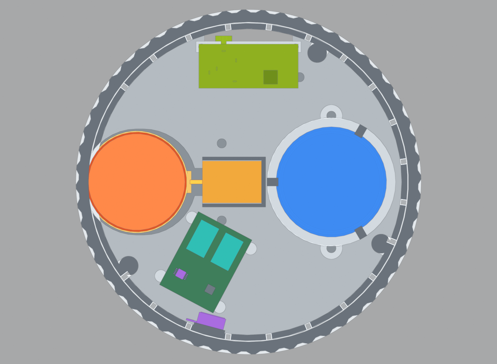

Cadrane · the 60 · v9 · sectionsWhere Everything Fits
Every bought component placed exactly as the v9 model puts it, cut open one mechanism at a time. Coloured solids are bought parts, light grey is printed structure, and the dark grey faces are where the section knife passed — if a surface is dark grey you are looking through something, not at it. All dimensions in millimetres. z = 0 is the underside of the steel plate, with the 1.5 mm pad below that. Azimuth is measured anticlockwise from the USB-C socket at the back, which is 0° and sits at twelve o'clock in the two plan views.
gimbal motordrive bandclutch servosliding carriagebearingsencoderhaptic LRAspeakersupercapsUSB-C3.5 mm jacklight sensorDAChalo LEDsLED flexdiffuserdisplaycircuit boardssteel plateprinted structurecut face
00-plan-floorPlan — the floor
Horizontal section at z 12, looking down. Twelve o'clock is 0°, the USB-C socket at the back. Everything on this level stands on the steel plate or, in the carriage's case, on the pad through a hole in it, and goes in before the plate is closed.

1
2
3
4
5
6
7
8
9
10
11
- Gimbal motor JD-Power MY-3514Caz 90° · r 40.5 · Ø35 × 14 · z 4.2–18.2 — the whole drive, on a sliding carriage
- Sliding carriageprinted Ø37 shoe, z 0–4.2, on the pad through the plate; the tab points inboard
- Linear servo AGFRC C1.5CLS PROaz 90° · 21.4 × 15.2 × 6.0 · z 6.5–12.5 — pushes the carriage tab directly
- Speaker Soberton SP-4005-1centre (0, −30) · Ø40 × 9.05 · z 5–14.05 — stands cone-up on its rear boss
- Driver board 30 × 22az 152° · r 33 · z 8.0–9.6 on 3 mm standoffs — TMC6300 and DRV2605L
- Two 20 F supercapacitorslying on the driver board, z 9.6–17.6
- Haptic LRA Vybronics VLV101040Aaz 165° · bonded to a pad on the inside of the wall, centre z 11.5
- USB-C GCT USB4520 mid-mountaz 0°, 10 mm off centre · socket centre z 3.3, on a board at z 2.2–3.8
- 3.5 mm jack Switchcraft 35RAPC4BH3az 0°, 9 mm the other way · axis z 2.0, hanging under a board at z 5.0
- Light sensor VEML7700az 0°, on centre · on a vertical board, looking out through a Ø4.8 hole at z 2.5
- Perimeter sound portsØ2 at z 12 on a 15° grid — 24 drilled, the 4 over the motor cut-out are lost
Note. The three M3 countersunk screws that pull the structure down onto the plate are at 125°, 245° and 332° on r 53, driven from underneath before the pad goes on.
Plan — the board and the wheels
Horizontal section at z 26, looking down: through the display's own circuit board, which is what decides where the three support wheels can go. The board is 85.5 × 65 and sits 4.5 off centre, so its corners reach r 56.6 while the wheel collars run out to r 59.2. At 60° and 120° a collar would foul it outright; 30, 150 and 270° are the positions that clear.
- Display PCB 85.5 × 65 × 1.6z 25.6–27.2 · offset 4.5 toward the header edge · its corners reach r 56.6
- 623ZZ wheel @ 30°3 × 10 × 4 in a printed Ø13.2 V-collar · axis r 52.63 · z 23.4–27.4
- 623ZZ wheel @ 150°the tightest of the three: the collar clears the board edge by 2.0
- 623ZZ wheel @ 270°3.3 clear · at 30° there is 11.0, which is why the three are not evenly useful
- Support column @ 42°4 × 6 printed block, r 51.5–57.5 — one of four that carry the display
- V-groove in the knob boreroot r 59.3 · z 23.8–27.0 — the wheels run in the groove, not on a ridge
- Knurled knob wallØ125 outside, Ø116 bore · 56 starts, 1.0 deep, 30° helix
Note. The columns are at 42, 138, 222 and 318°, three degrees off the display's own M4 holes at 45, 135, 225 and 315°. Two of those four holes sit 0.5 mm from the edge of the board, so no column can stand under them; the 1.2 mm seat tab reaches across instead.
Self-turning drive — engaged
Vertical section at 90°, through the motor. The gimbal motor stands on the pad through a stadium-shaped hole in the plate and drives the knob directly: a 0.6 mm flat silicone band round its Ø35 bell presses on the Ø116 bore, which is a 3.31 : 1 reduction.
- Gimbal motor Ø35 × 14z 4.2–18.2 · centre r 40.5 engaged · the bell is assumed to start 4.3 above the base face
- Flat drive band 0.6z 9.0–17.8 · drawn uncompressed, so its outer face at r 58.6 laps the r 58.0 bore — that 0.6 is the squeeze, held by 2.4 N of servo preload
- Knob bore Ø116the driven surface; the skirt starts at z 9.0, six tenths above the diffuser lip
- Sliding carriageØ37 shoe, z 0–4.2, riding on the pad; a Ø36 rim locates the motor, no bolt pattern yet
- Servo push tab1.5 × 8 × 9 standing off the carriage's inboard side — the pushrod bridges the last 4 mm
- Commutation board 12 × 12z 0–1.6 inside the carriage, MT6701 looking up a Ø9 sight hole at the shaft magnet
- Linear servoz 6.5–12.5 on the plate — no over-centre mechanism, no spring; preload is a software number
- Steel plate 5 mmthe carriage passes through it; the plate is the halo's bottom edge, not a floor for the motor
Note. Band grip at 2.4 N is the item that decides whether this drive works. If it slips, the fallback is a 2 : 1 bell-crank on the servo, which doubles the force at the cost of half the stroke.
Self-turning drive — released
The same section with the carriage retracted. The servo pulls back 2.4 mm and the whole motor goes with it: the band leaves the bore and the knob spins free on its three wheels. There is no detent hardware anywhere in v9 — every click is the motor.
- Motor retracted 2.4centre r 38.1 · the bell now clears the bore by 2.40, the band by 1.8
- The gapthis is the whole clutch: 2.4 mm of radial travel, held by the servo, no latch
- Carriage at its stopthe tab, not the servo's own 9 mm stroke, is what limits the travel
- Servo pushrodassumed on the 21.4 mm body axis; the rod-to-tab joint is not drawn yet
Note. The servo's 9 mm stroke keep-out runs on past the carriage tab in the interference check. That contact is expected, not a fault: the tab is the real stop.
Encoder
Vertical section at 330°, through the AEDR-8300. It looks outward at a code band printed on the knob bore across the 2.00 mm gap the part is specified for. The band is a 4.2 mm tall strip because the package is 3.96 mm across.
- Broadcom AEDR-8300-1K2package face 2.00 from the bore · centred z 20.5
- Encoder board1.0 thick, z 18.4–22.6, standing vertically in a pocket in the wall
- Code band on the borez 18.4–22.6 in a 0.15 recess, so the strip finishes flush with r 58.0
- Encoder towerprinted, part of the internal structure; the window through the wall is the only opening here
- Ledgez 15.6–17.4, inner r 49 — the shelf the structure hangs everything else from
Note. The code strip's 0.15 mm thickness is assumed. If the strip you can actually buy is thicker the recess changes, not the gap: the gap is what the encoder needs.
Knob support wheels
Vertical section at 30°, through one of the three wheels. A 623ZZ bearing sits in a printed V-collar and runs in a V-groove cut into the knob bore. The groove, rather than a ridge, is what lets the Ø115 display pass down through the Ø116 bore during assembly.
- 623ZZ bearing 3 × 10 × 4axis r 52.63 · z 23.4–27.4 — cut through, so it shows as two rings
- Printed V-collar Ø13.21.3 flank, 0.6 flat — it is the collar that touches the groove, not the bearing
- Eccentric bush0.9 mm eccentric, flange resting at z 22.8; a half-turn with a 2 mm hex key retracts the wheel
- V-groove in the boreroot r 59.3 · z 23.8–27.0
- Wheel post Ø8printed, up to z 22.8 — the bush drops in from above and is turned from below
- Display PCB edgez 25.6–27.2 — the wheels have to miss it, which is what fixes them at 30/150/270°
Note. Turn all three bushes to their retracted position, lower the knob on, then turn them back a half-turn each. That is the only way the knob goes on or comes off.
Ports
Horizontal section at z 3, looking down on the back of the device. All three back-panel parts live in one 32 mm slot cut clean through the steel plate: the USB-C socket 10 mm to one side, the 3.5 mm jack 9 mm to the other, the light sensor on centre. One board could not put the jack's axis and the socket at the same height, so there are three small ones.
- USB-C GCT USB4520-03-0-Amid-mount, socket centre z 3.3, mating face flush with the port face
- USB-C board 11 × 12 × 1.6z 2.2–3.8, lying on a shelf moulded into the port face
- 3.5 mm jack Switchcraft 35RAPC4BH3axis z 2.0, body z −1 to 5, hanging under a board at z 5.0
- Light sensor VEML7700on a vertical board, looking rearward through a Ø4.8 aperture at z 2.5
- Light-sensor board1.0 × 6.0, z −1.4 to 5.5, standing in a slot in the port face
- Printed port face 1.5r 49.5–51, 32 wide, z −1.5 to 5 — it closes the slot and carries all three
- Slot through the platefrom r 35 to the rim, 32 wide, taking the cable's right-angle plug
- Steel plate5 mm, and this slot is the only opening in it apart from the carriage’s
Note. Everything on this level has to finish below z 5.0, because that is where the halo starts — which is why the jack hangs under its board instead of standing on one. The internal plug and the boxed cable's right-angle plug are both assumed sizes and they set the width of this slot, so measure the cable you actually ship before the plate is cut.
Halo light ring
Vertical section at 200°. Ninety side-firing LEDs lie flat on the plate on a flex ring and fire outward into the diffuser. This is the change that matters: a side-view LED on a flex wrapped round a cylinder fires up or down, not out.
- SK6812SIDE-A, 90 of themr 58.8 · z 5.2–7.2 · emitting face pointing radially outward
- LED flex ringr 57.7–60.0 · z 5.0–5.2, lying flat on the plate top — continuous, 360°
- Halo diffuserr 60.0 in, 62.0–62.5 out · z 5.0–7.6 · 2.0–2.5 of wall
- Retaining lipz 7.6–8.4, out to r 60.5 — printed as part of the structure, holds the diffuser down
- Knob skirtstarts z 9.0: a 0.6 mm shadow gap over the lip, so the light line reads as a gap
- Steel plate edgeØ124 — the plate's own edge is the bottom of the light line
- Wall and its sound portsthe Ø2 perimeter ports at z 12 sit above the halo, inside the skirt
Note. The ring is unbroken all the way round only if the motor's stator base really is narrower than its bell. The model assumes Ø30 for the lowest 4.3 mm; at Ø35 the ring is interrupted for about ±11° at the motor.
Electronics bay
Full-diameter section at 152°, through the driver board. This is the whole vertical stack in one picture — plate, floor components, ledge, code band, wheels, display board, display, knob.
- Driver boardaz 152° · r 33 · z 8.0–9.6 — TMC6300 for the motor, DRV2605L for the haptic
- Supercapacitorstwo 20 F cans lying on the board, z 9.6–17.6
- Haptic LRAaz 165° · bonded to the wall at centre z 11.5 — into the structure, not the knob
- Speakercone-up at (0, −30), breathing into the cavity and out through the perimeter ports
- Encoderaz 330°, the far side of this cut
- Display PCB and discboard z 25.6–27.2, disc z 28.7–34.7, glass at 34.7
- Knob crownz 35.1–38.1 over a 0.4 rim gap; total height 39.6 including the pad
- Steel plateØ124 × 5, about 385 g — most of the mass, and all of the stability
Note. Height from the pad's underside to the top of the crown is 39.6 against a 40 mm limit, and the knob is 76 % of the side against a 67 % floor. Both are the tightest they have been.
Speaker and sound path
Vertical section at 270°. The speaker stands cone-up on its rear boss in a printed cradle, breathing into the cavity above it and out through the ring of small ports round the wall. Nothing fires down into the plate, because the plate is solid.
- Speaker Ø40 × 9.05centre (0, −30) · z 5–14.05 · cone up, standing on its rear boss
- Printed cradlea ring under the Ø40 flange with three snap fingers over it, z 5–12.25
- Ledgez 15.6–17.4 — the cavity the cone breathes into is everything under this shelf
- Perimeter sound portØ2 at z 12, on a 15° grid round the wall
- Wallr 55.5–57.6, and the ports go straight through it into the shadow gap
- Steel platesolid under the speaker; the pad below it is the foot
Note. Cone-up plus perimeter ports is the v9 arrangement — down-firing made no sense once the plate became a solid 5 mm slab with only the port slot through it. The cradle is held by two M3 countersunk from below, 48 mm apart; both sit off this cut, behind the speaker.
Display seat
Vertical section at 42°, through one of the four support columns. The display hangs from four 1.2 mm tabs in the 1.5 mm gap between the top of its board and the back of its disc, held by M4 × 4 driven before the plate goes on.
- Support column4 × 6, r 51.5–57.5, part of the internal structure
- Seat tab 1.2z 27.5–28.7 — 0.39 clear of the board, touching the back of the disc
- Display disc Ø115 × 6z 28.7–34.7 · glass at 34.7 · active area Ø87.6
- Display PCBz 25.6–27.2 · the 1.5 mm gap above it is all the room the tab has
- Knob bore and groovethe bore runs straight past at r 58; the groove is just below this cut
- Knob crownz 35.1–38.1, clearing the glass by the 0.4 rim gap
Note. The M4 holes are at 45, 135, 225 and 315° on a 106.07 PCD, three degrees off the columns and not on this cut. Tapped depth allows 3.5 mm of engagement, which is why the screws are M4 × 4 and not longer.
What these views do not settle
v9 passes its own interference checks — 302 bodies, 0 failures, 0 warnings, 14 expected envelope contacts. Every one of the items below is a number the model assumed, and every one is settled with calipers rather than another iteration.
- Motor base diameter and bell height. The model assumes the stator base is Ø30 for its lowest 4.3 mm. If the base is the full Ø35 the LED ring is interrupted at the motor; if the bell starts lower than 4.3 it fouls the diffuser lip. Nothing is published — measure it.
- Which end of the shaft carries the magnet. v9 puts the commutation board under the motor inside the carriage. If JD-Power fits the magnet at the top instead, the board moves up and the display rises about 3 mm, which is over the height limit.
- Motor bolt pattern. The carriage has a Ø36 locating rim and nothing else. There is no drawing.
- Servo lugs and pushrod. The mount is a tray and the rod-to-tab joint is not drawn.
- Band grip at 2.4 N. If the flat band slips on the bore, add the 2 : 1 bell-crank.
- Electrical layout. The driver, port, encoder and commutation boards are outlines only.